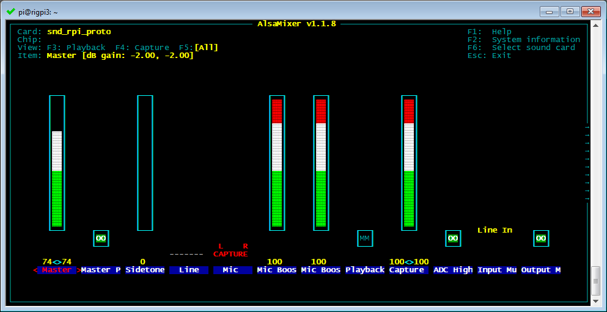
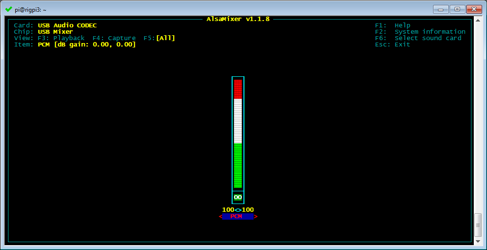

Audio to and from your radio is used for two-way audio (VoIP) for remote operation or for digital mode programs. Audio can be routed through the RigPi Audio board, an external USB audio soundcard, or through audio CODECs in many newer radios.
The default audio device for RigPi is selected from the device list shown by right-clicking the speaker icon on the Raspberry PI desktop. The RigPi Audio board uses the device named snd_rpi_proto, while most radio CODECs are designated as USB Audio CODEC. Choose the one you want to use.
The instructions below assume you will be using the RigPi Audio board and not an external CODEC. Instructions for using CODECs are provided later in this manual.
RigPi Audio can be used with VoIP or digital mode and spectrum analyzer programs. RigPi Audio is connected to RSS through the Raspberry Pi GPIO header, it does not connect via USB. Right-click the Speaker icon on the top right end of the RSS Desktop menu bar to confirm that the RigPi Audio driver, snd_rpi_proto, is listed and selected. See the Alsamixer Help Topic if you need to troubleshoot.
If you are using an early RigPi and see an entry for audioinjector-pi-soundcard you will need to follow a simple procedure to manually update RigPi. The instructions for making the change are in the RigPi Audio Update topic, Technical section, of this Help..
RX IN
Connect the audio out from your radio to the RX IN 3.5mm jack. The tip and sleeve connections are isolated through a transformer to reduce hum.
RX IN can be set up to provide a line or microphone input. The default is line input with a maximum of 2-volts peak-to-peak. To accommodate lower level audio sources, the RX IN input can be switched to a microphone level input. This is done using a program called Alsamixer. See the Alsamixer topic in Other Programs to learn how to use Alsamixer.
TX OUT
Connect TX OUT to your radio audio input. The tip and sleeve connections are isolated through a transformer to reduce hum. The TX OUT ring connection has several purposes. Normally it is used to control the PTT connection on your transmitter.
The easiest way to connect audio to a radio is through a rsadio's rear-panel accessory (Data) input jack. Most radios that provide this connection also require PTT at that jack to switch audio input from the front-panel microphone jack to the accessory jack. The PTT connection on the ring of the TX OUT connector can be used for this purpose.
I/Q IN
The I/Q input connection provides a way to connect the IQ signal from many radios such as SDR and the Elecraft KX3 to perform spectral analysis. Similar to "Panadapters" that were used years ago, an I/Q display shows a graph of signal level vs frequency over a wide bandwidth. The bandwidth in RSS is limited to 96 kHz as determined by the sampling rate of the audio chip used on the RigPi Audio board.
The I/Q input uses the left and right stereo inputs to the audio chip. The signals are not transformer isolated. Use Alsamixer to make sure RigPi Audio is in the Line Input mode.
RigPi Audio with Mumble VoIP
Mumble provides 2-way audio between your radio and a remote device, such as an iPhone or Android mobile phone. A Mumble server (named Murmur) is installed on RSS and always runs in the background. Mumble clients connect to Murmur for passing audio. One Mumble client is installed on RSS and is normally started on the Raspberry Pi desktop when RSS boots. Mumble clients on other devices connect to the same Murmur server where input and output audio is heard by all connected clients.
The Mumble client in RSS connects to your radio. Receive audio is fed to the Mumble client input and Mumble client output is fed to the radio mic input. The radio audio is provided to and from Mumble through the RigPi Audio board or a CODEC built in to the radio. If your radio has a built in CODEC for audio, the RigPi Audio board is not used. In this case, audio to and from the radio is carried over the USB CAT control cable.
Setting up the MFJ RigPi Audio Board for VoIP
RigPi Audio can accept audio through a microphone or line input source. If your radio has high output level (no more than 2-volts peak-to-peak) you should use the line input. If your radio audio output is low (no more than 200-mV peak-to-peak), use the microphone input. RSS initially uses the microphone audio input. If you want to use line input, the input selection is made through a program called Alsamixer.
Use the RX IN connector for audio from the radio and TX OUT for audio to the radio. The cable connects to the RJ-45 connector on the USB/Ethernet end of the RSS cabinet. The left channel is used for input and output audio. These connections are transformer-isolated. If you are using an RJ-45 cable, you must also use a jumper header in RigPi to complete the connections. MFJ cables come with a prewired header for the radio you have specified. A jumper header is installed on the RJ-45 daughter board, as shown below.

RigPi Audio does not have any onboard adjustments. RigPi Audio levels can be set through a program called Alsamixer or from the desktop icons for speaker and microphone.
Start Alsamixer from the Terminal window on RSS Desktop. Open Terminal and type:
alsamixer<return>
Here is the alsamixer view for the RigPi Audio board:

...and for a CODEC:

Note the following Alsamixer controls:
Use left/right arrow keys to move between settings
Playback options (F3)
1.Card: snd_rpi_proto (RigPi Audio), use F6 to select
2.Master gain set high, use up and down arrow keys to adjust
3.Mic Boost set high, use up and down arrow keys to adjust
4.ADC High Pass On, use M key to toggle
5.Input Mux Mic, use up/down arrow keys to adjust
6.Output Mixer On (OO, use M key to toggle
Capture options (F4)
1.Line [Off, Off], use Space bar to toggle
2.Mic On, use Space bar to toggle
3.Mic Boost (high), up/down arrow keys adjust
4.Capture (high), up/down arrow keys adjust
Setting up CODEC audio for VoIP
Please see the Mumble topic for details on using radio CODECs for audio.
Mumble Clients
On Windows, Macintosh and iOS, use the client named Mumble. One client for Android devices is named Plumble. They all operate in the same way. Start Mumble (or Plumble) and open the Favorite Servers settings. Click the + button to add a new Favorite.
Complete the Description, Address, Port, Username and Password settings. The Address holds the IP for the Murmur server, the Port defaults to 64738, Username can be your call, and password 7388 (unless you have changed it). The Username MUST be unique. If you have a tablet and phone, both running Mumble, one can use <your call> as Username and the other must use something like <your call>-1. You can also use phone as a username and tablet as the second username.
Radio Quirks
Most radios provide audio connections that are straightforward. Some radios, notably Kenwood models, provide audio connections through a Data connection on the rear panel. You will find many more details on the RigPi forum. Use the Search function to look for information in Topics. There are also a number of documents in the Files section that deal with specific radio connections and setups.
Kenwood radios with a Data connector
Since the radio normally expects audio to come through the microphone connector, a switch signal must be provided to the Data connector. The switch signal is normally PTT. This means that you must make three connections if you are using the rear panel Data connector: audio in, audio out, and PTT.
Yaesu (HF models)
Some Yaesu radios only pass audio when in digital/PSK mode, such as the last generation of HF radios (FT-817(ND), FT-818ND, FT-857(D), FT-897(D)). For full functionality, a microphone interface is needed.
Audio routing determined by menu settings
It may be necessary to change menu settings in your radio to provide an audio path through a rear panel connector. Some radios, such as the Yaesu FT-950, only allow transmit audio to pass through the Data connector using the PSK mode.
Mumble Settings
See the Mumble topic in Other Programs for the necessary settings.